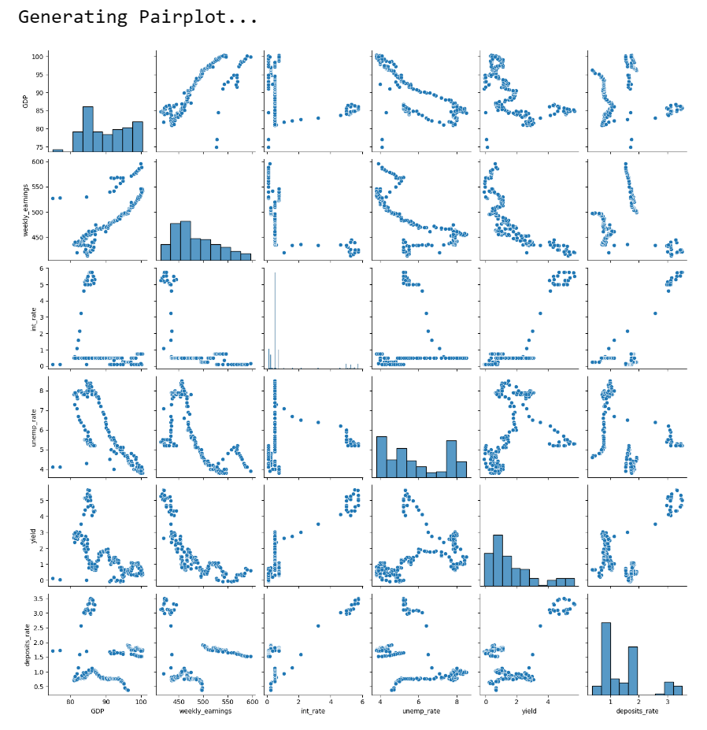
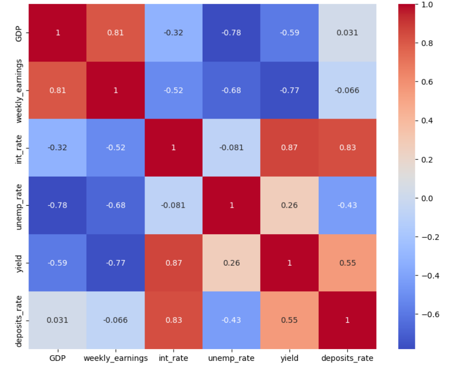
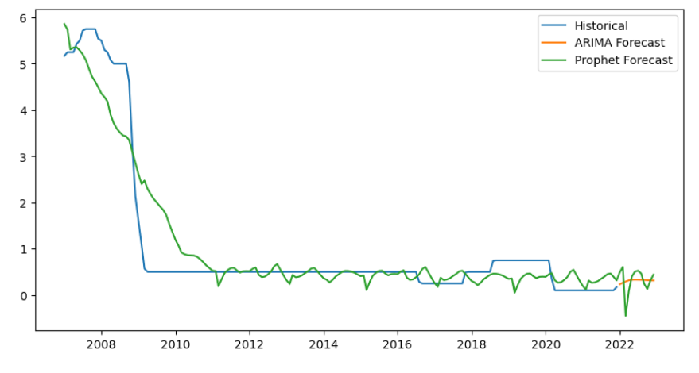
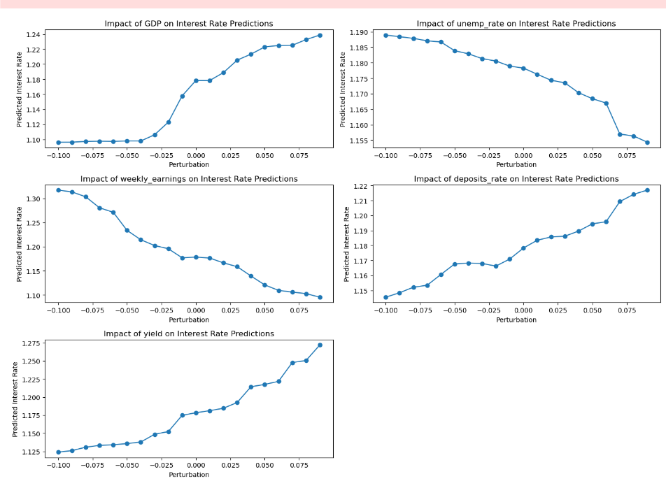

Impact of Interest Rates on the Economy and Banking Industry: A Predictive and Forecasting Analysis using Machine Learning and Time Series Models"
Project Description
In this project, we delved into the intricate relationships between interest rates and various macroeconomic factors. Utilizing advanced data analysis, machine learning, and time series forecasting techniques, we aimed to predict interest rates and understand how changes in macroeconomic factors influence these rates. Our goal was to develop robust models and conduct sensitivity analysis to provide insights into the dynamics of the economy and the banking industry.
Problem Statement:
Interest rates are a critical component of economic stability and growth. They influence borrowing, investment, and consumer spending. This project aimed to predict future interest rates and analyze the impact of various macroeconomic factors on these rates. By leveraging machine learning and time series models, we sought to uncover complex relationships and provide accurate predictions to inform economic policy and decision-making.
Data Collection
To address this problem, we collected a comprehensive dataset comprising various macroeconomic indicators such as GDP, unemployment rate, weekly earnings, deposit rate, interest rate, and yield. This dataset enabled us to capture the diverse economic interactions and behaviors over time.
Analytical Process
Data Preparation
• Loaded and cleaned the dataset, ensuring completeness and accuracy.
• Standardized features to ensure consistency and improve model performance.
• Split the data into training and testing sets to evaluate model performance effectively.
Exploratory Data Analysis (EDA)
• Visualized relationships between different macroeconomic factors and interest rates using pair plots and correlation matrices.
• Identified significant correlations and interactions that guided feature selection for modeling.
Machine Learning Models
• Trained and evaluated two machine learning models: Linear Regression and Random Forest Regressor.
• Assessed model performance using Mean Squared Error (MSE) and R-squared (R2) metrics.
• Random Forest Regressor demonstrated superior performance, capturing complex relationships more effectively.
Time Series Forecasting
• Applied ARIMA models to predict future interest rates based on historical data.
• Visualized and compared model predictions with historical interest rates to assess accuracy and trends.
Sensitivity Analysis
• Conducted sensitivity analysis to assess the impact of changes in different macroeconomic factors on interest rate predictions.
• Varied each feature within a ±10% range while keeping others constant and visualized the impact on predictions.
• Identified key factors such as GDP and unemployment that significantly influence interest rates.
Insights and Results
Data Preparation:
• Successfully loaded and cleaned the dataset.
• Standardized features to improve model performance.
EDA:
• Visualized relationships between macroeconomic factors and interest rates.
• Identified significant correlations that guided feature selection.
Machine Learning Models:
• Random Forest Regressor outperformed Linear Regression, indicating superior ability to model complex relationships.
• MSE for Linear Regression: 0.1510, R2: 0.9433
• MSE for Random Forest: 0.0708, R2: 0.9734
Time Series Forecasting:
• ARIMA model provided reasonable forecasts for future interest rates.
• Visual comparison showed predicted trends aligning well with historical data.
Sensitivity Analysis:
• Visualized the impact of each macroeconomic factor on interest rate predictions.
• Identified key factors such as GDP and unemployment with significant influence on interest rates.
Visualizations & Results:
Exploratory Data Analysis (EDA)
• Pairplot: Visualized relationships between different variables.

•Correlation Matrix: Showed the correlations between variables.

Model Performance
•Linear Regression:
MSE: 0.1510
R2: 0.9433
•Random Forest Regressor:
MSE: 0.0708
R2: 0.9734
•The Random Forest Regressor outperformed the Linear Regression model, indicating better predictive power and capturing complex relationships more effectively.
•ARIMA and Prophet Models: Both models provide reasonable forecasts for future interest rates. Visual comparison with historical data shows the trends and seasonality captured by these models.
•Forecast Plot: Demonstrates how the models predict future interest rates, providing a visual representation of potential trends.

•Visualized the impact of each macroeconomic factor on interest rate predictions.
•Identified key factors such as GDP and unemployment, which had significant influence on the interest rate.

Conclusion
By leveraging machine learning and time series models, we successfully predicted interest rates and analyzed the impact of macroeconomic factors. The insights gained from this project can inform economic policy and decision-making, helping to foster a more stable and predictable economic environment.